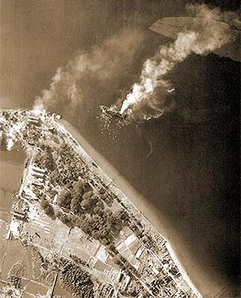

|
j
a v a s c r i p t |
January 23, 1945
The Tribune is an orgy of announcements concerning American losses, casualties and whatnot; that the Americans crossed the Agno River; have reached Aguilar, Bayombong and Pozorrubio. Off Taiwan, Kamikaze units "heavily damaged" two carriers and an unidentified warship. In our waters, the Japanese claim "121 foe ships blasted" from January 3 to 12, of which 98 were sunk, including 8 carriers, 1 battleship and 77 transports. The latest cock-and-bull story is about a Sub-Lieutenant Tanaka, who crept up on enemy positions through "diamond-shape iron barbs sharp enough to penetrate through rubber-soled shoes," several lines of "detector nets" and "watch dogs," before single-handedly blasting five enemy camps. He returned safely and told the story himself so it must be true, right?

Oryoku-Maru, Olongapo 15/12/44
Two weeks ago, a former Japanese gardener turned soldier handed Ruby Valdes a water-damaged dollar bill — proof, he said, that he had talked to Lee Stevens. (He had helped Lee's wife, a Valdes girl, send things to her POW husband in the past.) He reported that Lee was in one of the POW ships "torpedoed" off Olongapo last December, but managed to swim ashore safely, along with "most" of the POWs. The survivors were taken to San Fernando, La Union, where they embarked for Formosa on January 5. He watched the ship sail then left immediately for Manila. With B-24s picking off boats around Lingayen and a task force attacking Formosa, it's hard to believe that second ship could have escaped, but I recall Georgie lamenting to me around that time that the Americans said two Japanese ships had gotten away from western Luzon. It's a sliver of hope that Joe is still OK, but not enough to tell Ma. She's still expecting news of Joe's rescue. A few MPs are still at Manga Avenue, different ones. Last night they took a few families, and this included tying them up before marching them out. I understand the McMickings and even the children of "Shorty" Hall were similarly bound and taken. A friend stopped me at Legarda and asked for a touch. Noting his pallid features, I gave him a bill. "Thanks," he said. "I've just been let out after six months in Fort Santiago." He named the person who tipped the Japanese that he was a guerrillero (he wasn't) then showed me his scabby legs, thin as toothpicks with puffy knees due to the "kneeling treatment." I gave him two more bills, and later wished I could've given him more, considering food prices today. |
|
|
|
|